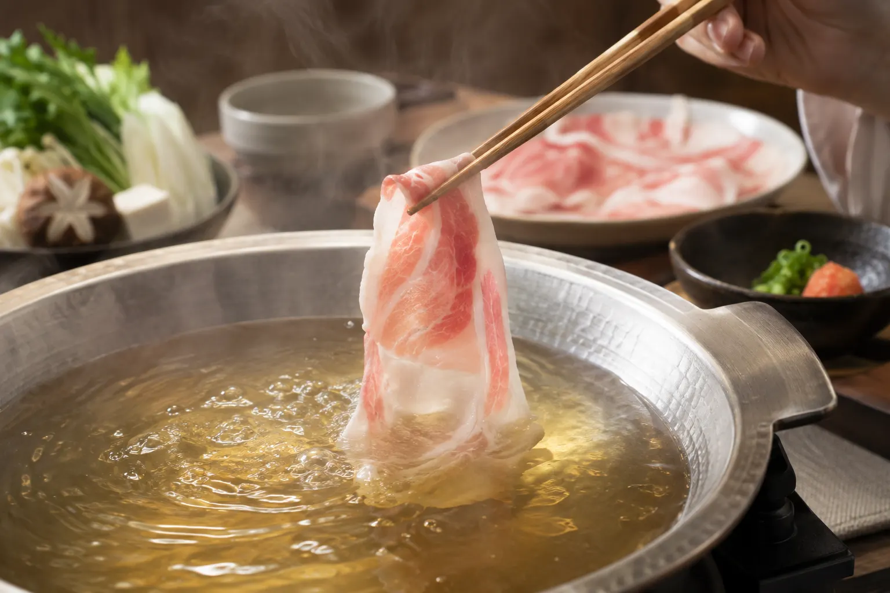
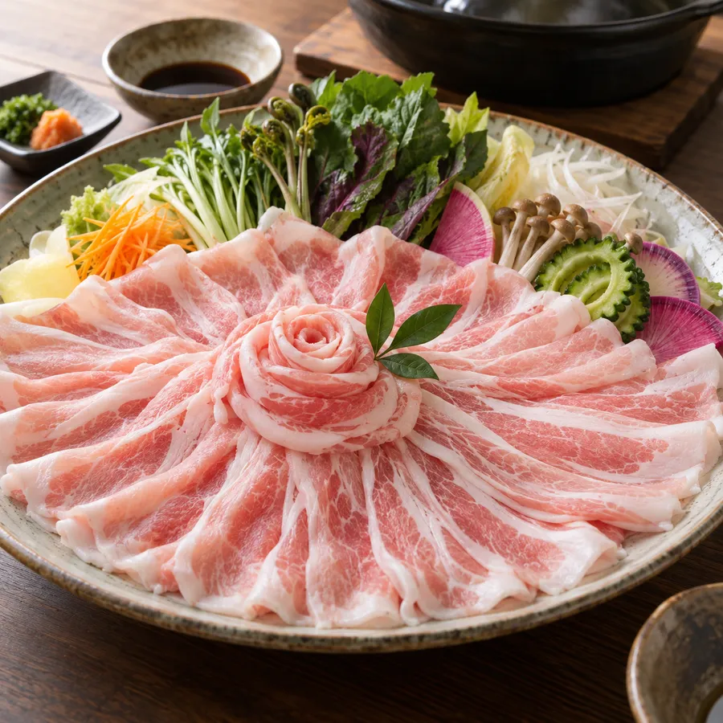
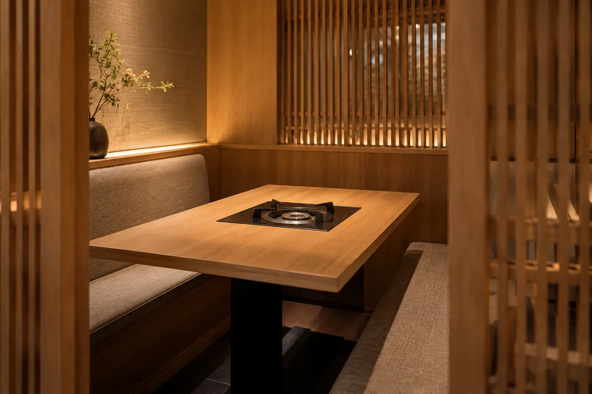
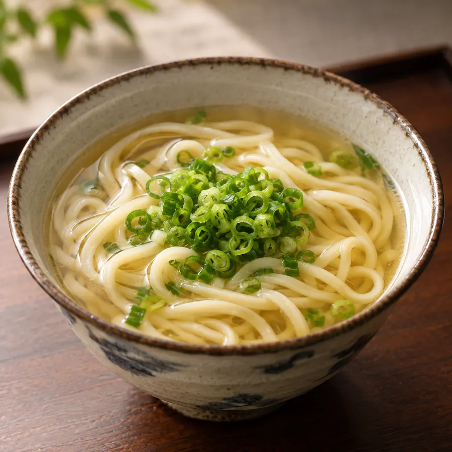

The sweetness of black pork, in a clear broth.
Reservations recommended ・ Kagoshima black pork shabu-shabu
Kurobuta black pork from our partner farms in Kagoshima, enjoyed as shabu-shabu in a bonito and kombu broth.
Concept
Kurobuta fat is light and sweet, spreading its flavor the moment it touches your tongue. We slice it to 0.8 mm, so a quick swish through the broth is all it needs.
Finish with soba noodles cooked in the shabu-shabu broth — enjoy it to the last drop.
Owner

Menu
Prices include tax, per person.
Interior
All seating is semi-private — families with small children can relax, too.


Information
Reservations
Reservations recommended. Book by phone, LINE or online.